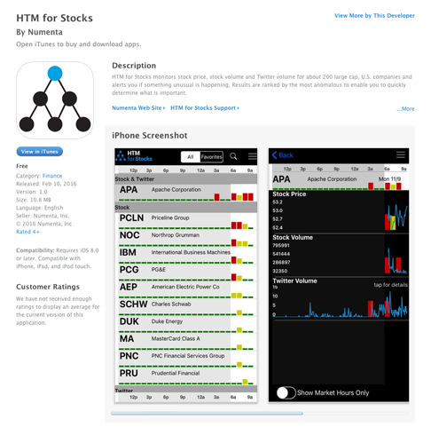
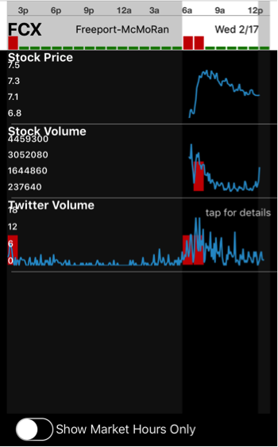
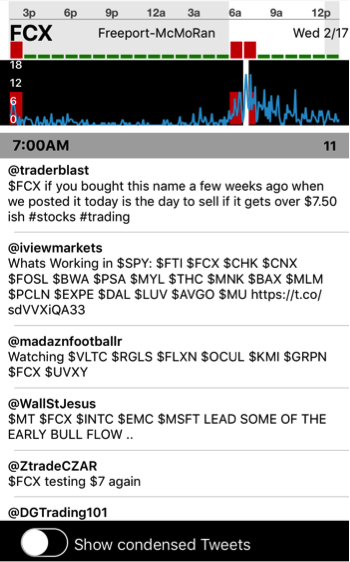
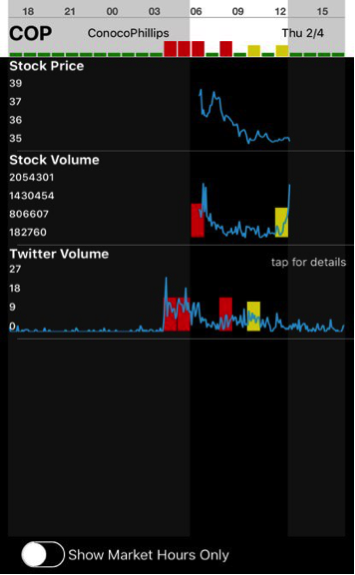

Real-time Insights from a Random Walk: HTM for Stocks Hits the iPhone
 Christy Maver•Director of Marketing
Christy Maver•Director of MarketingWhile Numenta may not be in the business of selling traditional products, we are in the business of making our technology pervasive. To that end, we build sample applications that demonstrate the value of HTM, and we make the code available in our open source project. But while anyone can read about our technology and applications, experiencing them requires some serious computer science skills. That changed this month when we launched an iPhone version of our HTM for Stocks app. Android users can still access the app here. Now, all it takes to experience HTM is your cell phone.

HTM can be applied in a variety of use cases, but we chose to focus this application on the stock market because you don’t have to be an algorithms or investment expert to understand it. HTM for Stocks monitors financial and social data (specifically stock price, stock volume and Twitter volume) for a couple hundred stocks and alerts you in real-time when a significant anomaly is occurring.
To illustrate the benefits of this application, think about how you would find securities anomalies without it. You’d start with the list of 200 companies you want to monitor and you’d have three data streams for each: the stock price, the stock volume and the Twitter volume. Rather than try to create 600 individual models and learn patterns in each one, you might set global thresholds like, “Notify me when any stock price moves more than 1 standard deviation away from its moving average of the last 60 days.” You would catch some anomalies this way, but you would miss the more subtle temporal anomalies.
A couple recent examples demonstrate how HTM for Stocks finds these types of anomalies:
Example #1
On February 17, HTM for Stocks found a purely temporal anomaly in the stock volume of FCX (Freeport-McMoRan). It is normal for stock volume to spike at the beginning and end of a trading day, with the data often resembling a U shape. However, it’s very rare for a stock’s volume to spike twice in a short time frame. HTM for Stocks catches this anomaly, where other detection methods like thresholding would not.

Interestingly, HTM for Stocks identifies temporal anomalies in the Twitter volume just before the stock volume anomaly.

The Twitter volume data not only indicates that something unusual is happening with this stock, it also serves as root cause analysis. You can view the underlying Twitter data by tapping on it to reveal the tweets. This allows you to get qualitative insights and see what people are saying about the company’s stock. In this case, many of the tweets were advising shareholders to sell this particular stock if it go to a certain price.
Example #2
On February 4, HTM for Stocks picked up an unusually high volume of Twitter activity for Conoco Phillips before the market opened. The company had announced a large decrease in dividends. This was followed by anomalous stock volume movement where again we see a double spike at the beginning of market hours. We also see multiple Twitter volume anomalies throughout the day.

Much like the previous example, these anomalies are temporal in nature, and would not necessarily be caught using a global alert or thresholding technique.
HTM for Stocks demonstrates the value of combining multiple metrics. If you were only monitoring any one of these 3 streams (stock price, volume and Twitter volume), you might miss some important anomalies. But if two or three data streams are displaying unusual behavior at the same time, something truly significant is happening.
Numenta has no plans to turn this into a commercial application, but it’s easy to see how someone could. The amount of data we are faced with in a single day continues to grow while the amount of hours in a day never will. The underlying technology is not specific to stocks but can be applied to many different streaming applications. The ability to do anomaly detection in streaming analytics with large, noisy data streams offer real-time insights and a competitive advantage.
I hope you’ll download HTM for Stocks and give it a try. Let us know what anomalies you find by contacting feedback@numenta.com or leave a comment below.
Christy Maver•Director of Marketing